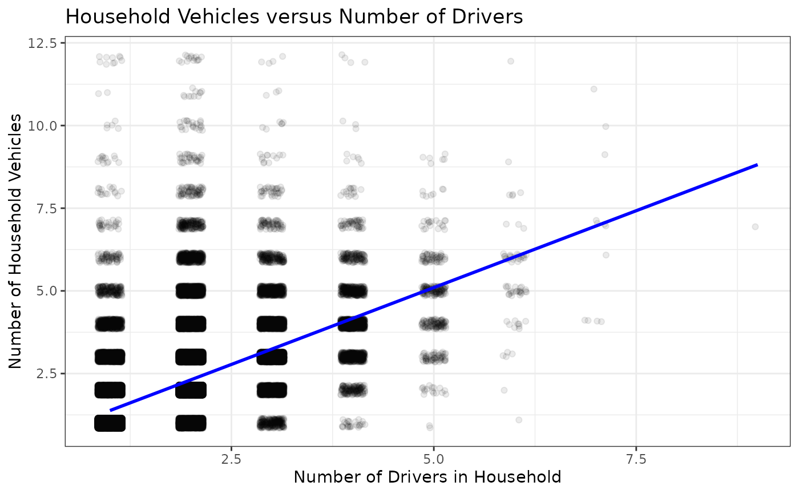

Include household characteristics categorical and numeric variables.
Format
A data frame with 129695 rows (each row is a household) and 9 columns
- household_id
Household identifier. Use this variable to join the house dataset and the person dataset as well as join the house dataset and the trip dataset.
- region
2010 Census division classification for the respondent's home address.
- number_drivers
Number of drivers in household.
- count_household_members
Count of household members.
- number_vehicles
Count of household vehicles.
- household_life_cycle
Life Cycle classification for the household, derived by attributes pertaining to age, relationship, and work status.
- count_adult_household_members
Count of adult household members at least 18 years old.
- number_workers
Number of workers in household.
- count_young_child
Count of persons with an age between 0 and 4 in household.
Examples
if (require("tidyverse")) {
# Filtered to households with at least one driver
house_with_drivers <- house |>
filter(number_drivers > 0)
# Filtered to households with at least one vehicle
house_with_vehicles <- house_with_drivers |>
filter(number_vehicles > 0)
# Plot household vehicles by number of drivers
ggplot(data = house_with_vehicles,
aes(x = number_drivers,
y = number_vehicles)) +
geom_jitter(alpha = 0.08, width = 0.15, height = 0.15) +
geom_smooth(method = lm, se = FALSE, formula = y ~ x, color = "blue") +
labs(title = "Household Vehicles versus Number of Drivers",
x = "Number of Drivers in Household",
y = "Number of Household Vehicles") +
theme_bw()
}
#> Loading required package: tidyverse
#> ── Attaching core tidyverse packages ──────────────────────── tidyverse 2.0.0 ──
#> ✔ dplyr 1.2.1 ✔ readr 2.2.0
#> ✔ forcats 1.0.1 ✔ stringr 1.6.0
#> ✔ ggplot2 4.0.3 ✔ tibble 3.3.1
#> ✔ lubridate 1.9.5 ✔ tidyr 1.3.2
#> ✔ purrr 1.2.2
#> ── Conflicts ────────────────────────────────────────── tidyverse_conflicts() ──
#> ✖ dplyr::filter() masks stats::filter()
#> ✖ dplyr::lag() masks stats::lag()
#> ℹ Use the conflicted package (<http://conflicted.r-lib.org/>) to force all conflicts to become errors
